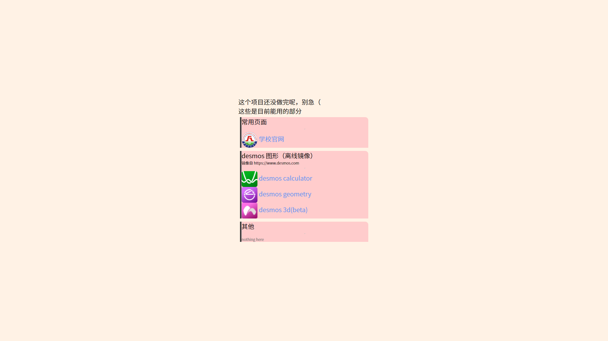
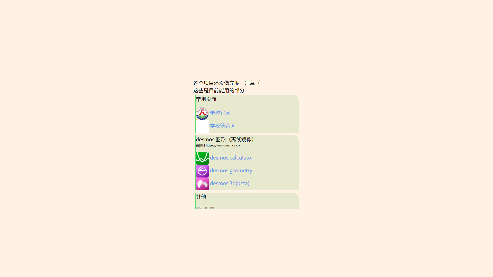
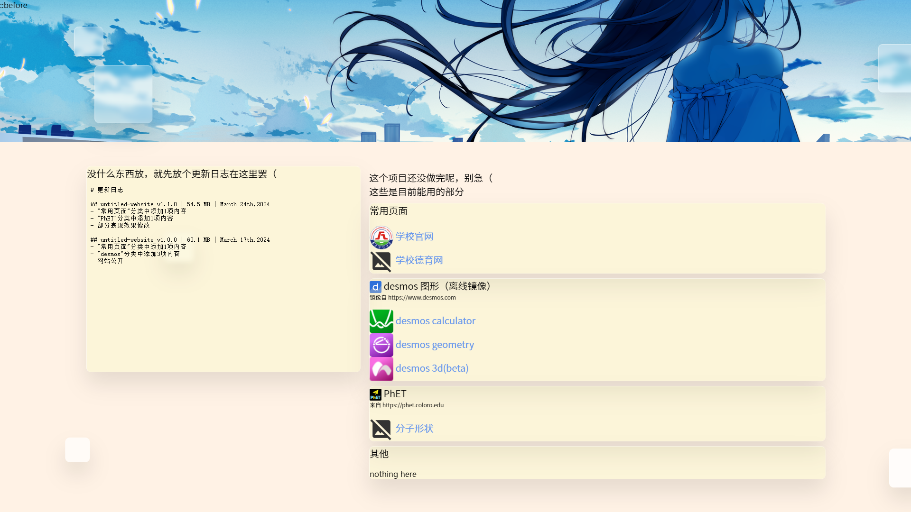
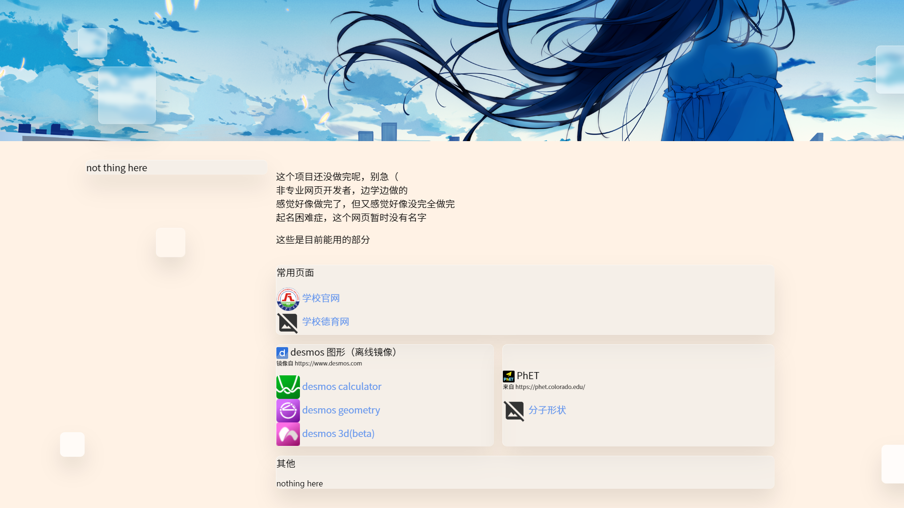
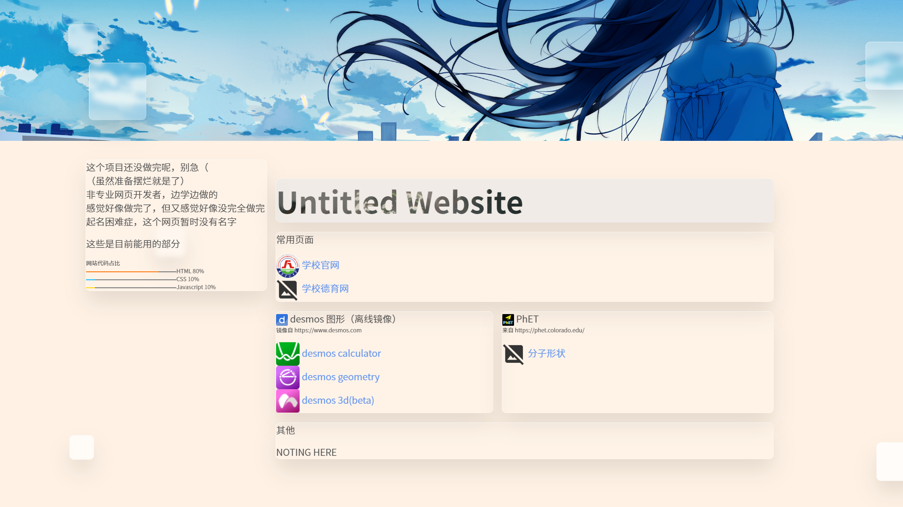
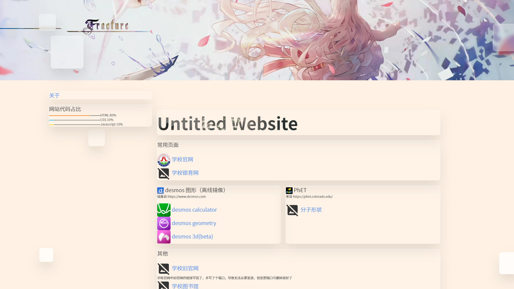
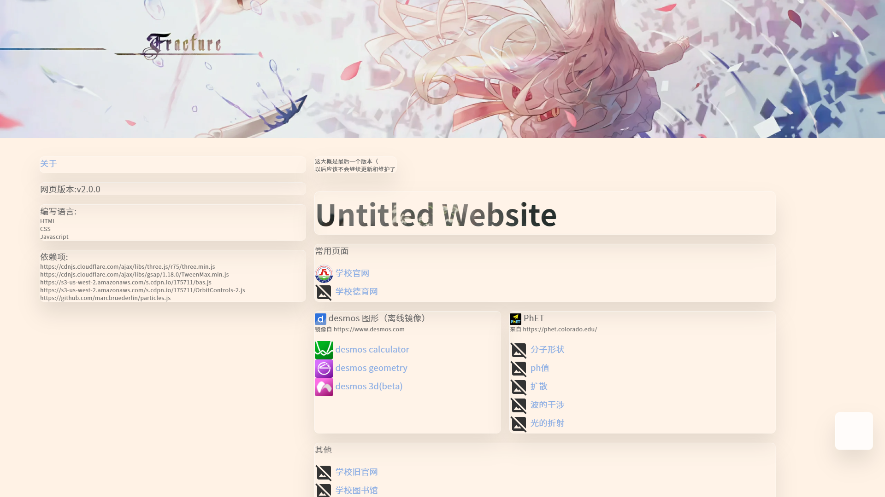

啊？真的有人会看更新记录？

未公开的测试版

untitled-website v1.0.0 | 60.1 MB | March 17th,2024
- "常用页面"分类中添加1项内容
- "desmos"分类中添加3项内容

untitled-website v1.1.0 | 54.5 MB | March 24th,2024
- "常用页面"分类中添加1项内容
- "PhET"分类中添加1项内容
- 部分表现效果修改

untitled-website v1.2.0 | 63.9 MB | March 31th,2024
- 页面布局调整
- ι��θ—�ι΅µζ·»ε� δΈ€ι΅Ή

untitled-website v1.3.0 | 64.1 MB | April 5th,2024
- 控件动画调整
- 部分表现效果修改

untitled-website v1.3.1 | 62.3 MB | April 13th,2024
- "其他"分类中添加3项内容
- 部分表现效果修改
- 添加一个说明页

untitled-website v2.0.0 | 77.5 MB | April 20th,2024
- 添加了5个依赖
- 对大部分表现效果进行了修改
- "PhET"分类中添加4项内容
- 侧边栏内容填充